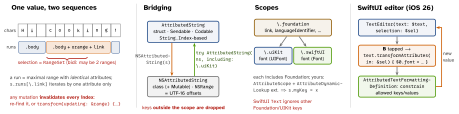

ios-platform · folio
In one line: AttributedString (iOS 15) is a Swift value type: a sequence of
characters plus a sequence of runs, each run a range with one
AttributeContainer; attributes are type-safe keys grouped in
scopes (Foundation, UIKit, SwiftUI, yours). NSAttributedString is the older
reference type keyed by NSRange, still what TextKit stores. iOS 26 makes it editable in
SwiftUI: TextEditor(text: $attributed, selection: $sel).
Download PDF Print view LaTeX source


AttributedString
- Views:
characters,unicodeScalars,utf8/utf16,runs.s[range]→AttributedSubstring;s[rangeSet]→DiscontiguousAttributedSubstring. s.foregroundColor = .redsets it on every run; or build anAttributeContainer→mergeAttributes/replaceAttributes(_:with:)/setAttributes.- Markdown:
try AttributedString(markdown:)— inline styles and links become attributes; blocks becomepresentationIntent, whichTextdoes not draw (.inlineOnlyPreservingWhitespacekeeps newlines).Text("**hi**")parses a literal;Text(someString)does not. - Custom keys:
CodableAttributedStringKey(MarkdownDecodable…for̂[text](key: value)); rules:inheritedByAddedText,invalidationConditions [.textChanged],runBoundaries .paragraph. - In SwiftUI, string attributes beat view modifiers; SwiftUI-scope keys beat UIKit ones.
AttributedString vs NSAttributedString
AttributedString | NSAttributedString | |
|---|---|---|
| kind | struct, COW, Sendable | class; NSMutable… to edit |
| keys | typed (\.font), scoped | [NSAttributedString.Key: Any] |
| index | AttributedString.Index | NSRange (UTF-16 ints) |
| Codable | yes (codable keys) | NSSecureCoding, RTF(D), HTML |
| used by | SwiftUI Text/TextEditor | UIKit views, TextKit, Core Text |
Example — build, walk, bridge; a Bold button (iOS 26)
var s = try AttributedString(
markdown: "Read the [docs](https://example.com)")
var hot = AttributeContainer(); hot.foregroundColor = .orange
s.mergeAttributes(hot)
for run in s.runs where run.link != nil {
print(String(s[run.range].characters)) } // "docs"
let ns = NSAttributedString(s) // hand to UIKit
// SwiftUI: @State text: AttributedString, sel: AttributedTextSelection
TextEditor(text: $text, selection: $sel) // B/I/U built in
func toggleBold() { // ctx: fontResolutionContext
let f = sel.typingAttributes(in: text).font ?? .default
let on = f.resolve(in: ctx).isBold
text.transformAttributes(in: &sel) {
$0.font = ($0.font ?? .default).bold(!on) } }Links & data detectors
.link attribute or markdown link; SwiftUI intercepts via .environment(\.openURL, OpenURLAction { _ in .handled }). UITextView: link colour comes from linkTextAttributes, not the run; iOS 17 textView(_:primaryActionFor:defaultAction:) gets a UITextItem (link, attachment, tag). dataDetectorTypes work only when not editable — else NSDataDetector.
Rich-text editing — SwiftUI (iOS 26)
TextEditor(text: $attributed, selection:); system B/I/U in the context menu + keyboard bar (.textInputFormattingControlVisibility(_:for:)).AttributedTextSelection= caret (+ typing attributes) or ranges:indices(in:),attributes(in:),typingAttributes(in:).- Mutate through the selection so it stays valid:
transformAttributes(in:),replaceSelection(_:withCharacters:). - Limit formatting:
AttributedTextFormattingDefinition(Scope+ValueConstraints) via.attributedTextFormattingDefinition(_:)— controls for disallowed values disable themselves.
Rich-text editing — UIKit
- Edit
textStoragein place (keeps selection + undo), don’t resetattributedText.allowsEditingTextAttributesadds B/I/U; iOS 18textFormattingConfigurationfeeds the formatting panel. typingAttributesstyle the next typed text; cleared when the selection changes. iOS 26 multi-selection:shouldChangeTextInRanges:replacementText:.
Text input — UITextInput & IME
UIKeyInput(insertText,deleteBackward,hasText) suffices for a PIN field; a real editor adoptsUITextInput(positions, ranges, geometry,tokenizer,inputDelegate).- Marked text: CJK IMEs compose in
markedTextRange(setMarkedText→unmarkText) — not committed text yet.
Traps
- Max-length check in
shouldChangeText…ignoringmarkedTextRangebreaks CJK typing — skip while composing. - Keeping an
AttributedString.Indexacross an edit — usetransform(updating:). NSRangebuilt fromString.count— UTF-16 ≠Characters (emoji).- HTML import (
NSAttributedString(data:options:),.html) spins up WebKit: main thread, slow — never in a cell.